Nyzo version 508 (commit on GitHub) begins to apply block-score penalties based on performance scores.
This version affects primarily the verifier, but its message-replay protection also improves the sentinel.
In the chainScore() method of the Block class, the dormant penalty that was once applied to inactive nodes is now applied to nodes that the cycle agrees have unacceptable performance. The penalty is only applied to blocks with a score of 0. This avoids problems that would otherwise be caused by two consecutive verifiers with unacceptable performance.
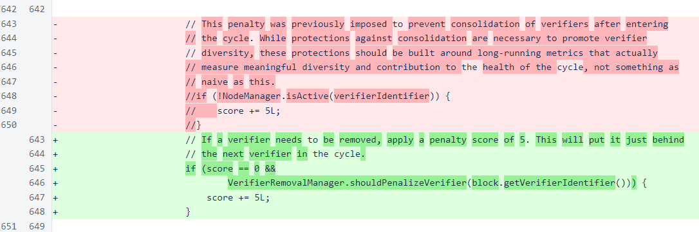In the BlockManager class, the sets for cycle and near-cycle lookups have been changed to concurrent versions to improve thread safety, and a field has been added to track the last height at which a verifier was removed from the cycle.
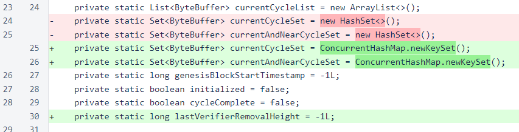The lastVerifierRemovalHeight field is set in the updateVerifiersInCurrentCycle method. The update is convenient here, because a simple comparison of the previous and new cycle lengths is sufficient for detecting a dropped verifier.
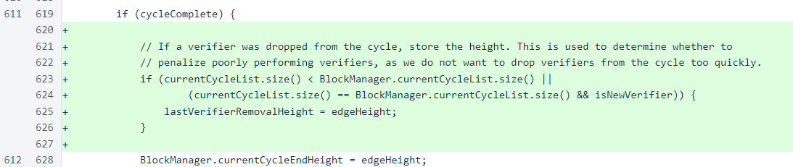In the MeshListener class, a protection has been added against replay attacks. All messages are timestamped, and the timestamp is part of the signature. However, the timestamps were not being checked, and this would allow attackers to save and replay messages in ways that could cause a number of undesirable behaviors. This issue was reported by a member of the community and is subject to a bounty. This fix was initially planned for a later release, but replay attacks could be used to undermine the verifier-removal process, so this fix was promoted to this build to improve the integrity of the new process.
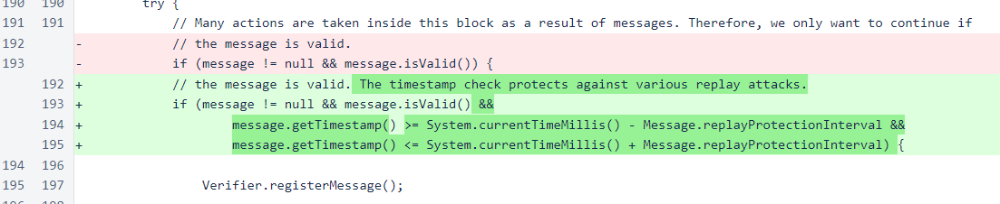Also in the MeshListener class, logic has been added to handle two new messages necessary for the removal process. VerifierRemovalVote39 allows the in-cycle verifiers to reach a pre-consensus about which verifiers to remove, and VerifierRemovalTallyStatusRequest420 allows the person who controls a verifier to see the tally of verifier-removal votes. This process is similar to the new-verifier pre-consensus process, but it allows votes for multiple verifiers simultaneously.
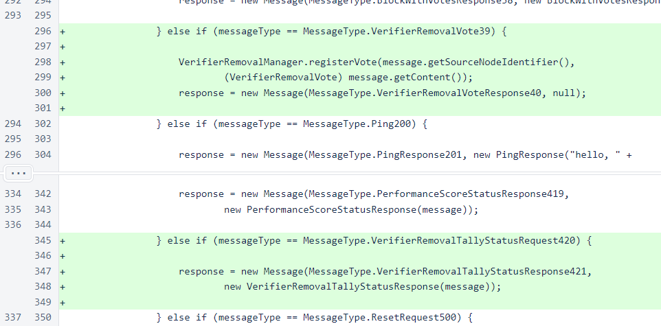In the Message class, replay protection has also been added for responses to outgoing messages.
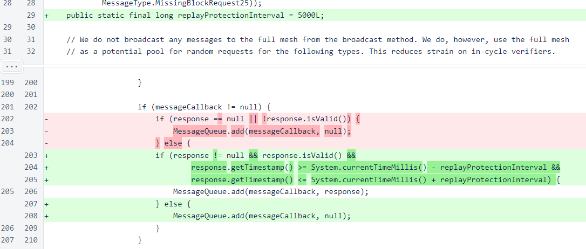Various minor cleanups were performed on the NewVerifierVoteManager class. The vote map has been changed to a concurrent map to improve thread safety, and all method synchronization has been removed, as it is no longer necessary. The acceptAllVotes conditions, useful in some early testing scripts, have also been removed.
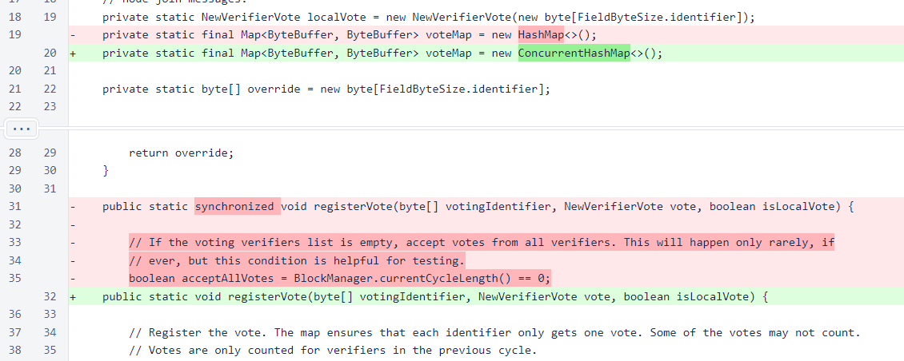In the Verifier class, the sleep time after an iteration in which a block has not been frozen has been reduced from 1.0 seconds to 0.3 seconds. This has a negligible effect on CPU usage, but it does improve the average interval between blocks by a small amount, which will help the cycle produce blocks quickly enough to keep up with the open edge.
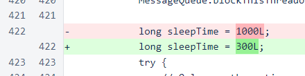Cleanup processes for the verifier-removal and new-verifier vote maps have been added. The new-verifier cleanup process was inadvertently omitted from previous versions, and implementation of the verifier-removal process caused us to notice its absence.
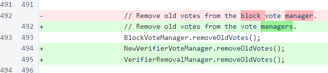When a block is frozen, after performance scores are updated, removal votes are sent based on the performance scores. Also, the tally of removal votes received from other verifiers in the cycle is updated.
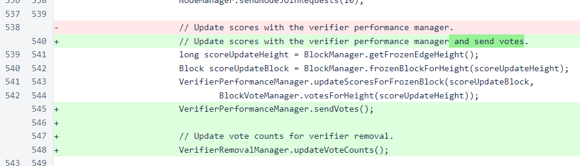In the VerifierPerformanceManager class, perVoteDecrement has been changed from -6 to -5. This changes the level at which a verifier can maintain a stable score from 50% to 60% of votes. This, does not change the maximum amount of time that a verifier can stay in the cycle while unresponsive, and it does not change the maximum credit that a verifier can receive for good performance. It only raises the baseline long-term performance requirement. This was changed because, based on observations of scores produced in 506, the 3-to-6 ratio appeared insufficient for removing verifiers whose performance negatively impacted the cycle.
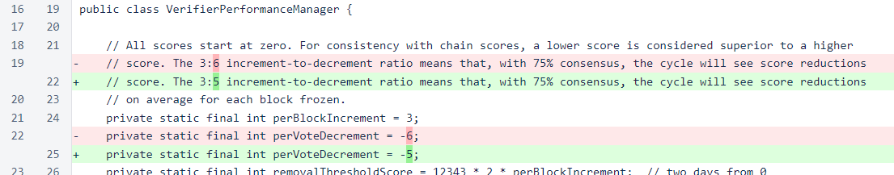The filename for storing scores has been changed. This will reset scores for all verifiers while retaining the old scores for reference. This ensures that no verifiers are penalized for their performance before this build was released. The constant and map are both used by the method that sends removal votes to other verifiers in the cycle.
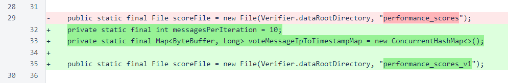The getVerifiersOverThresold() method produces a list of all verifiers whose performance scores warrant a removal vote. The list is limited to the maximum list size allowed by the VerifierRemovalVote message, with verifiers with the least-worst performance scores being dropped from the list if necessary.
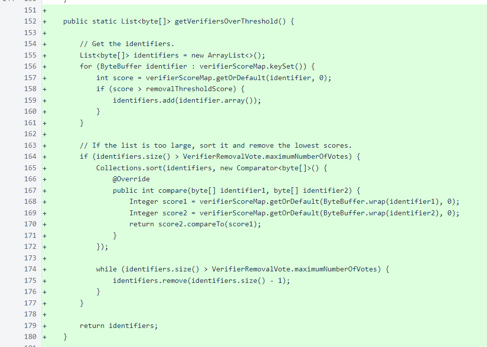The sendVotes() method uses a timestamp-based technique to send removal votes to the entire cycle at a controlled rate. Each time a block is frozen, a number of votes (10, according to the messagesPerIteration constant) are sent to other verifiers in the cycle. The timestamp map ensures, roughly, that each verifier receives the same number of votes over time and that those votes are spaced rather evenly. This method also ensures that removal messages do not add additional bursts of message activity to the verifier.
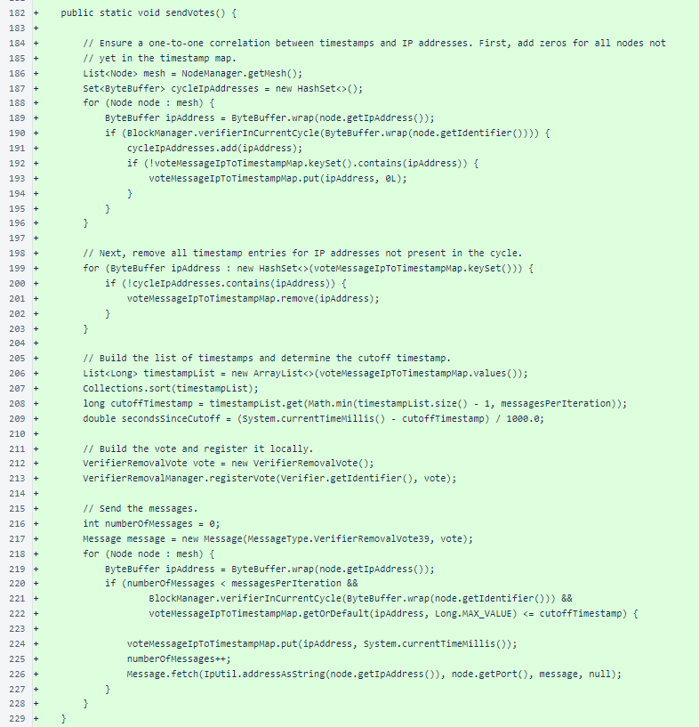The VerifierRemovalManager class functions like the other vote-tally managers (BlockVoteManager, NewVerifierVoteManager), with the one variation being the allowance that a single verifier may vote for several verifiers for removal. If any verifier receives removal votes from more than half the cycle, that verifier may be removed from the cycle. Multiple verifiers may be eligible for removal at once, but the rate of removal is controlled to ensure that the cycle does not decrease in size too quickly.

The last removal height has been added to the status response so that any issues in its calculation can be spotted promptly.
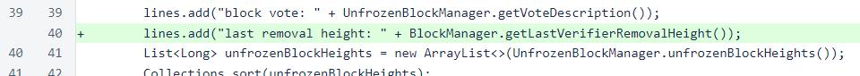The VerifierRemovalVote object is used to communicate verifier performance issues among in-cycle verifiers. A protection has been included to ensure that no verifier votes for another verifier more than once.
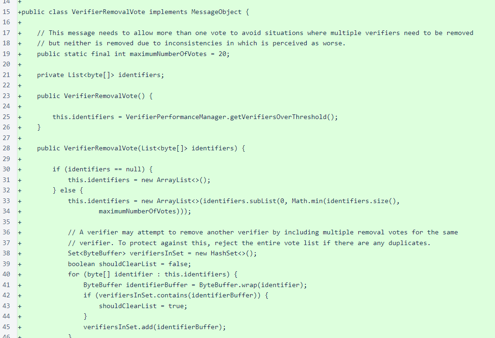The VerifierRemovalTallyStatusResponse provides insight into the vote-removal tally on a verifier. This is a debug request, so it must be self-signed. It is similar to NewVerifierTallyStatusResponse.
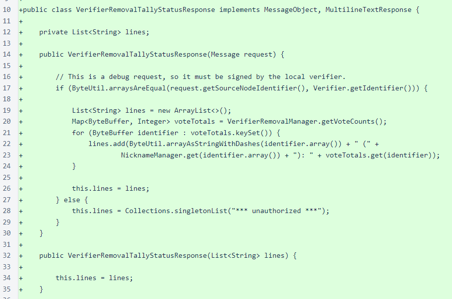To reduce code duplication, NewVerifierTallyStatusRequestScript has been modified to use the ScriptUtil.fetchMultilineStatus() method. Also, VerifierRemovalTallyStatusRequestScript has been added with the same template.
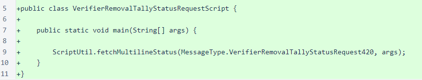For finding the message-replay issue, a total of ∩150,000 will be awarded to e50a...1aec. This bounty is especially large due to the number of current and potential future attacks that could be executed easily by replay of messages. The transactions will be posted here after they are confirmed.